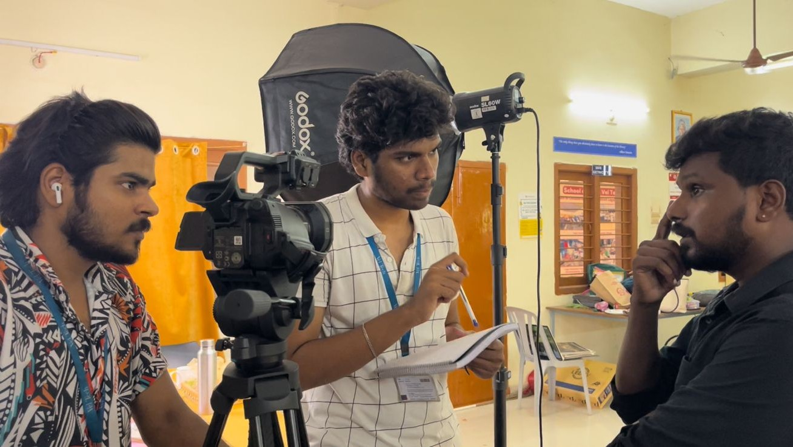

Creative Philosophy
Indian visual richness meets modern minimal execution. Every project follows a clear narrative spine with maximal emotional texture.

About C Celluloids
I started C Celluloids to blend emotion-driven filmmaking with marketing clarity. My goal: make every frame beautiful, and every story useful for your brand growth.
Indian visual richness meets modern minimal execution. Every project follows a clear narrative spine with maximal emotional texture.
Campaigns, concerts, documentary projects, and institutional storytelling across India with lean yet reliable production pipelines.
Pre-production strategy, shoot planning, cinematic capture, edit, grade, and delivery optimized by platform and goal.
Collaborations with NIFT Bengaluru, live concert productions, and Ministry-led documentary work.
